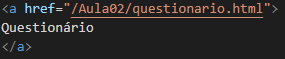
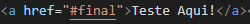
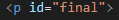
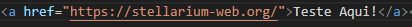
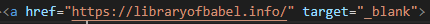
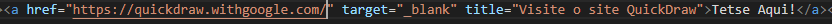

Hiperlinks
Utilizamos hiperlinks para redirecionar o usuário a outra parte de uma mesma página, ou para uma página diferente. A tag utilizada é <a>, seguida de href, o sinal "=" e aspas duplas indicando para onde o usuário deve ser redirecionado. A sintxe assemelha-se a:

OBS: O hiperlink não precisa ser necessáriamente um texto, como a palavra "Questionário" no exemplo, pode ser uma imagem ou outro elemento
Tipos de Hiperlink:
-
Hiperlinks que direcionam o usuário para outra página do mesmo site, nesse caso, entre as aspas duplas colocamos o direcionamento para a outra página html. A sintaxe é semelhante a imagem a seguir:
Teste aqui!
-
Hiperlinks que direcionam o usuário para outra parte na mesma página, nesse caso utilizamos entre as aspas dulpas O símbolo de hashtag e o nome do direcionamento. Em seguida, adiconamos o direcionamento na parte da página desejada utilizando id="nome do direcionamento". A sintaxe é semelhante a:


Teste Aqui!
-
Hiperlinks que direcionam o usuário a outros sites da web, nesse caso utilizamos entre aspas duplas o endereço do site desejado. A sintaxe se assemelha a:

Teste Aqui!
Estruturas adicionais:
Hiperlinks são fundamentais para construção de sites completos, porém, para utilizalos de maneira mais completa ainda podemos adicionar dentro da tag <a> se gostaríamos de que a nova página abrisse em uma nova aba e uma caixa de título a ser exibida quando o cursor é posicionado sobre o link, da seguinte maneira:
-
Para que a nova página abra em uma nova aba no navegador, dentro da tag <a> adicionamos target="_blank", como no exemplo a seguir:

Teste Aqui!
-
Para adicionar um texto a ser exibido, adicionamos dentro da tag <a> a seguinte estrutura: title="título", a sintaxe aproxima-se de:

Tetse Aqui!